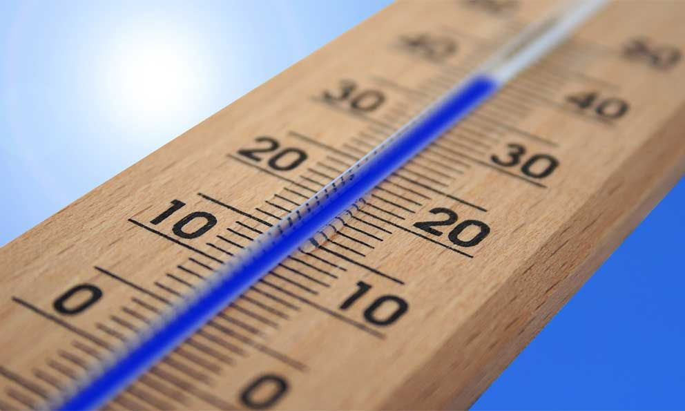

Temperatura
El calor es una forma de energía que se transmite de un cuerpo a otro, puede modificar las
propiedades
físicas y
químicas así como sus características de las sustancias.
La palabra calor es muy común en nuestra vida cotidiana, pero es importante diferenciar su significado en la
física que
no coincide con el uso común que le damos.

Para saber la temperatura de un cuerpo es necesario utilizar un instrumento que la mida, es decir que nos de
un valor de
la cantidad de calor o frio que se tiene, a estos instrumentos se les llama termómetro y se miden segun las
escala que tenga:
Grados Celsius °C.
Grados Fahrenheit °F.
Kelvin: K.